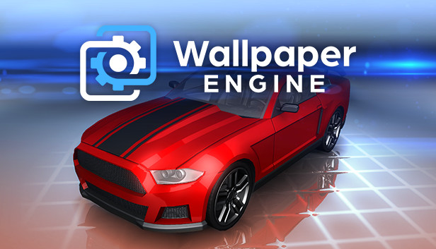

第一次装 Wallpaper Engine？五分钟让你的 Windows 桌面活起来
这是一篇写给完全没碰过动态壁纸的新手的入门指南——从"它到底是什么"到"装好之后先玩啥"，一步一步带你跑通。
如果你之前只见过静态图片当桌面背景，那这篇就是为你写的。不需要任何基础，跟着走一遍，你的 Windows 桌面五分钟之内就能"活"起来。
它到底是干嘛的——一个生活化类比
很多人以为 Wallpaper Engine 就是"能放视频当壁纸的软件"，其实差远了。它的官网把它定位成一个引擎——在 Windows 桌面和图标之间插了一个透明的渲染窗口，在那一层实时绘制动画、播放视频、甚至执行网页代码。
你可以把它想象成这样：正常的 Windows 桌面是一张静态海报，Wallpaper Engine 在海报上贴了一层透明薄膜，这层薄膜里藏着各种动态效果——飘落的樱花、流动的粒子、会跟着鼠标转的 3D 模型、甚至能点按钮的小游戏。你的图标照常摆在上面，该点啥点啥，底下那层该怎么动怎么动。
这个定位决定了它跟其他"壁纸软件"的区别：它不只是放图，而是能做网页能做的事，同时还会在你进全屏游戏的时候自动把显卡资源让出来，完全不拖游戏后腿。
五分钟上手——从装完到第一下看到动起来
从下载安装到第一次看到壁纸跑起来，跟着下面走，不超过五分钟。
第一步：确认已经激活并启动
如果你是 Steam 买的，打开 Steam 库找到 Wallpaper Engine，点"启动"就行。第一次启动的时候会初始化渲染环境，可能要等个几十秒。
要是启动页弹出来让你选"开机自启"，建议勾上——勾完之后下次开电脑不用手动启动，壁纸直接就在后台跑了，而且自启后它只是一个几十 MB 的轻量进程，完全不拖开机速度。
第二步：打开发现页，挑一张顺眼的
启动之后默认会停在"已安装"标签页（刚装完这里是空的）。点一下顶部的"发现"标签，你就进入了 Steam 创意工坊的壁纸社区——这里有十几万张别人做好的壁纸，全免费下。
发现页的好用的功能：
- 标签筛选：左边能按 3D、2D、动漫、风景、科技、抽象、游戏原画这些分类筛，想找什么直接点
- 排序：按热门、最新、评分、订阅数排，不知道选啥就按热门来
- 搜索：搜"原神""赛博朋克""星空"这种关键词，一搜一个准

第三步：订阅 → 下载 → 自动上桌面
找到顺眼的，比如热门榜单第一张樱花粒子壁纸，点进去看预览。满意了就点预览窗口里的订阅按钮——Steam 会弹出确认框，点确认，Wallpaper Engine 开始后台下载。
下载进度在客户端底部或右上角能看到。场景壁纸（就是粒子、3D 模型那种小体积的）几秒钟就下完，高清视频壁纸可能要一两分钟。下完之后它自动出现在"已安装"库里，而且自动应用到当前屏幕——你此刻应该已经能看到桌面上有东西在动了。
多屏用户注意一下：顶部有个显示器选择栏，先选中你想让壁纸跑在哪个屏上，再点库里面的壁纸缩略图。
上手之后，先玩这三个功能
壁纸跑起来了，但你可能还有点懵"接下来该干嘛"。别慌，先玩下面三个功能，每个都很有惊喜。
功能一：预览窗口里调参数
很多场景壁纸不只是一个动画，它暴露了一堆可调整的属性——比如颜色、粒子速度、旋转角度、密度这些。在预览窗口里你会看到右侧或下方有一排滑块和开关，随便拖几个试试，你会发现同一张壁纸能调出完全不同的氛围。
比如樱花壁纸，你把密度调大一倍、速度调慢一半，瞬间就从"春日飘落"变成了"暴风卷樱"。这些调整是实时预览的，满意了再订阅，订阅之后壁纸会带着你调的参数应用到桌面。
功能二：收藏夹
预览窗口里有个心形图标，点一下就把这张壁纸加进收藏夹。为什么需要这个？因为发现页每次打开排序都可能变，你上次看到那张满意的壁纸下次就不一定在同个位置了——加了收藏之后，在"已安装"标签页旁边就能找到收藏夹，随时回来找。
功能三：游戏时自动暂停
这个功能默认是开的，你甚至可能没注意到。但它是 Wallpaper Engine 最实用的设计之一：一旦它检测到你进了全屏游戏或全屏应用，壁纸引擎就自动暂停渲染，释放所有显卡资源给游戏。
不是简单降帧率，是直接停止绘制循环——显卡立马把给壁纸的那份算力还给游戏。游戏退出来之后壁纸自动恢复，无缝衔接。
对了，在设置的"性能"选项卡里面你还能把暂停强度调到"停止（释放内存）"——这个更狠，直接把壁纸进程从内存里卸掉，追求极致游戏性能的小伙伴可以试试。具体每个选项对显卡和内存的占用影响，翻翻wallpaperengine文档能看更细的参数对照。
三个新手最常问的问题
壁纸变黑屏了怎么办？
这是 Wallpaper Engine 被问到最多的问题。别慌，按官方给的顺序排查，从上到下别跳过：
- 先更显卡驱动——80% 的黑屏问题都在这里。别用 Windows Update 推送的驱动，去 Nvidia / AMD / Intel 官网下最新包，安装时选"清洁安装"（Clean Install），装完重启电脑再试。
- 关闭硬件加速试试——设置里找到"视频框架"，把视频解码从"自动"改成指定编解码器，或者在"设置 → 综合"里关掉 GPU 加速。关掉之后如果黑屏消失，说明是硬件加速兼容问题。
- 检查编解码器——如果黑屏只发生在视频壁纸上，大概率是 HEVC/H.265 编解码器没装。Windows 商店搜 HEVC 可以单独买，或者装个免费的 K-Lite Mega Codec Pack。
- 测试内置壁纸——如果所有 Workshop 壁纸都黑屏但内置默认壁纸正常，问题就在你下载的那张壁纸上，直接取消订阅就行。如果连内置壁纸都黑屏，问题在系统层面，继续往下看。
玩游戏会卡吗？
默认配置下完全不会。自动暂停机制就是为游戏场景设计的——检测到全屏游戏立刻停壁纸渲染，显卡资源全让给游戏。如果你发现还是卡，可以去设置的"性能"选项卡把暂停模式切到"停止（释放内存）"，这个更彻底。
还有几个小技巧：去显卡厂商官网下最新驱动（用清洁安装模式）、把录制工具（ShadowPlay、OBS）里把 Wallpaper Engine 加入排除列表。多屏用户注意一下，如果主屏在玩游戏，副屏可能还在渲染壁纸，嫌卡的话游戏时手动把副屏切到静态壁纸就行。
开机自启会拖慢电脑吗？
不会。自启之后 Wallpaper Engine 在后台跑的只是一个轻量进程，内存占用几十 MB，远低于浏览器和杀毒软件。真正吃资源的是壁纸引擎渲染环节——但系统空闲时它也很克制，而且你进游戏、开全屏应用的时候它还会主动停。
唯一的例外是如果你订阅了超多高清视频壁纸、同时开了跨屏多显示器，那内存和显卡占用可能会上去。正常使用完全没问题。
好啦，基础玩法就这些。先把这几个功能摸透，等你觉得"好像也没什么难的"，就可以去试试进阶方向了——比如用 SceneScript 给壁纸加自定义交互、或者自己做一张壁纸传到社区。这套资料在几个主流仓库都能拿到，方便不同网络环境的朋友查阅：GitHub上能找到完整的文档目录和壁纸源码备份，Gitee和GitCode同步维护着同一份内容，国内访问会更顺畅。